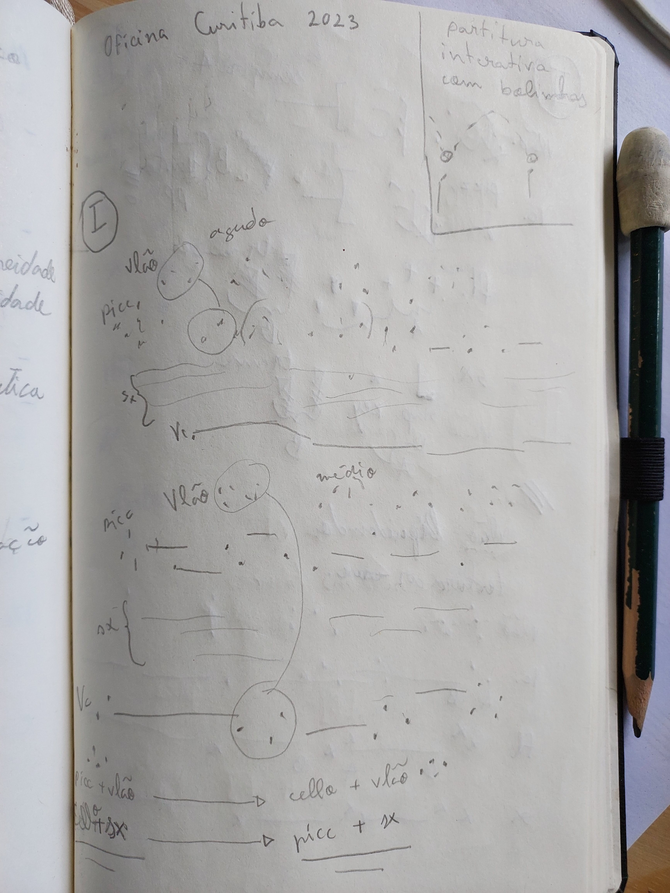

(Pré)-composição 2
Oficina de Música de Curitiba 2023
Estrutura geral
Consegui pensar em três fragmentos de 1 a 1:30 minutos que conectados formam a peça completa.
As imagens abaixo apresentam um percurso dos materiais. O percurso para cada um dos 3 fragmentos está completo neste planejamento e poderia ficar interessante.



Embora esteja produzindo bastante (abaixo detalho algumas etapas do processo), não acredito que consigo finalizar esses 3 fragmentos até dia 14. Estou pensando em trabalhar na reescritura deste primeiro como maneira de gerar os outros dois. Por exemplo, aproveitar a mesma estrutura com outro percurso harmônico, ou com outro modo de leitura (inserindo mais pausas na leitura p. ex.), ou mudando para notação tradicional.
O trabalho até então envolve uma série de atividades que acho interessante mencionar:
Escrita do texto poético já pensado como estrutura temporal
Estou trabalhando a partir do texto. Tento pensar o material musical como se fosse a leitura de um texto poético.
O trecho abaixo se refere ao fragmento A. Para a apresentação abaixo (diferente da partitura 1), usei a seguinte notação:
normal = uma nota para cada sílaba
tachado = pausa (leitura mental sem tocar)
_sublinhado__ = notas que se extendem por várias sílabas
Piccolo:
Palavra salta, salta, voa
atirada contra a água leve, leve, leve
salta, salta, voa
palavra a - tirada
pousa sobre as nuvens
pa - lavra con - tra a água
mer - gulha cada vez mais fundo
cada vez mais alto
a palavra seduz a língua e escorre
e escorre, e escorre, e escorre
cada vez mais sonhada
Cello: (retrógrado)
a palavra seduz a língua e escorre
e escorre, e escorre, e escorre
cada vez mais sonhada
mer - gulha cada vez mais fundo
cada vez mais alto
salta, salta, voa
palavra a - tirada
pousa sobre as nuvens
pa - lavra con - tra a água
Palavra salta, salta, voa
atirada contra a água leve, leve, leve
Funciona?
Faltou dizer na pré-composição 1 que se trata de leitura mental, o texto não será ouvido. Uso o texto tachado na partitura para indicar isso (falta fazer as notas de performance onde isso deve ficar claro).
Assim, a ideia é esta leitura associada (musical/textual) que apresenta grande flexibilidade em relação ao resultado, e ao mesmo tempo, um detalhamento em outro nível.
Márcio, não entendi se teu apontamento sobre esta técnica se referia ao caso específico do que apresentei, ou a técnica em si. O que apresentei, realmente não funcionaria muito bem porque estava aproveitando um texto e não tinha pensado o ritmo a partir do texto (as combinações texto/notas se davam por acaso). Agora, escrevi o texto e pensei os ritmos para ele, num processo parecido com o de musicar uma letra. O perfil melódico também derivou do texto.
Irá "funcionar" assim como "funcionou" na peça As vozes das páginas, embora não tenha certeza sobre o quanto funcionou naquela ocasião, ou melhor, não tenha certeza sobre o quanto esse funcionamento é interessante.
Códigos
Notação
Às vezes, um simples problema de notação demora a ser resolvido neste processo. Alterar uma articulação pode significar escrever uma função que selecione aquela nota numa lista de notas para modificá-la. Como a ideia não é trabalhar como se estivesse num programa gráfico, as funções tem que ser "espertas" e não voltadas a um único detalhe da partitura (embora isso aconteça algumas vezes).
O principal problema de notação neste caso é quanto a esta relação com o texto. Tenho escrito uma voz invisível na qual escrevo uma régua com o ritmo escrito da leitura do texto. Escrevo o ritmo sobre esta régua pensando na relação que terá com o texto (mais sílabas para uma única nota, ou pausa, etc.). Além disso, também precisei ocultar outras coisas da partitura e às vezes elas precisam reaparecer.
Optei por escrever cabeça de nota de semínima para notas associadas a uma única sílaba e cabeça de nota de mínima para notas associadas com mais sílabas.
Outras alturas
O percurso de alturas desse primeiro fragmento para o Piccolo é o seguinte:
1) multifônico 1 modulado (filtrado para extensão do piccolo) sorted pitches: [18, 19, 21.5, 22, 23, 23.5, 24, 24.5, 25, 27, 30, 31] used pitches: [23, 31, 25, 23, 21.5, 25, 24, 23, 21.5, 24, 18, 24, 23, 31, 23, 24, 21.5, 23, 24, 25] 2)multifônico 1 modulado + multifônico 2 (filtrado para extensão do piccolo) sorted pitches: [18, 23, 23.5, 25, 30, 31] used pitches: [25, 23.5, 23, 18, 30, 25, 23.5, 25, 23, 23.5, 18, 31, 18] 3) multifônico 2 modulado (filtrado para extensão do piccolo) sorted pitches: [16, 17, 18, 19, 20, 20.5, 21, 22, 23, 23.5, 25, 26, 27, 28, 29, 30] used pitches: [16, 23.5, 30, 19, 21, 16, 27] 4) multifônico 3 modulado (filtrado para extensão do piccolo) sorted pitches: [16, 18, 19, 20, 20.5, 21, 22.5, 23.5, 24, 25.5, 26, 27, 27.5, 28, 29, 30, 31] used pitches: [16, 22.5]
Posso apresentar partitura destas alturas se alguém quiser.
Contágios
O principal contágio é o uso do multifônico como gerador de alturas (Charles Neimog). Preciso encontrar outro contágio para explorar.
Partitura
Na partitura que estou enviando estão escritos apenas piccolo e cello. Falta pensar dinâmicas e articulações. Falta acertar o violão (notas superagudas com slide) e o sax (multifônicos dos quais derivam as alturas.
Reescrevendo o texto
(em algum tempo entre etapa 1 e 2)
Palavra atirada contra a água Salta, salta, voa Pousa sobre as nuvens Mergulha cada vez mais fundo Cada vez mais alto Seduz a língua e escoa Escoa, salta, voa Cada vez mais sonhada
Footnotes:
: Na partitura, o texto tachado se refere à leitura mental (não falado).